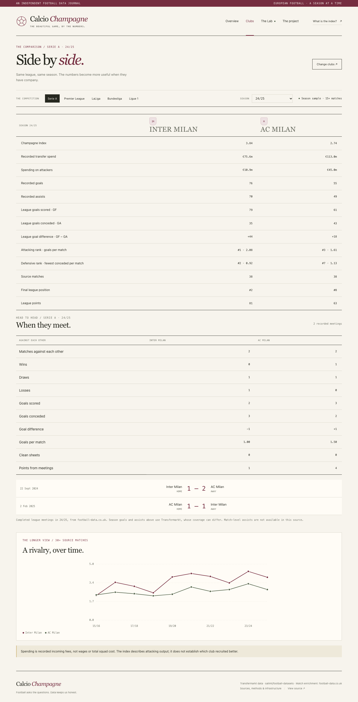
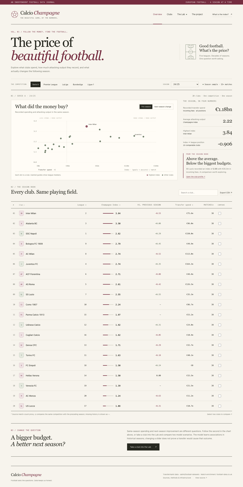
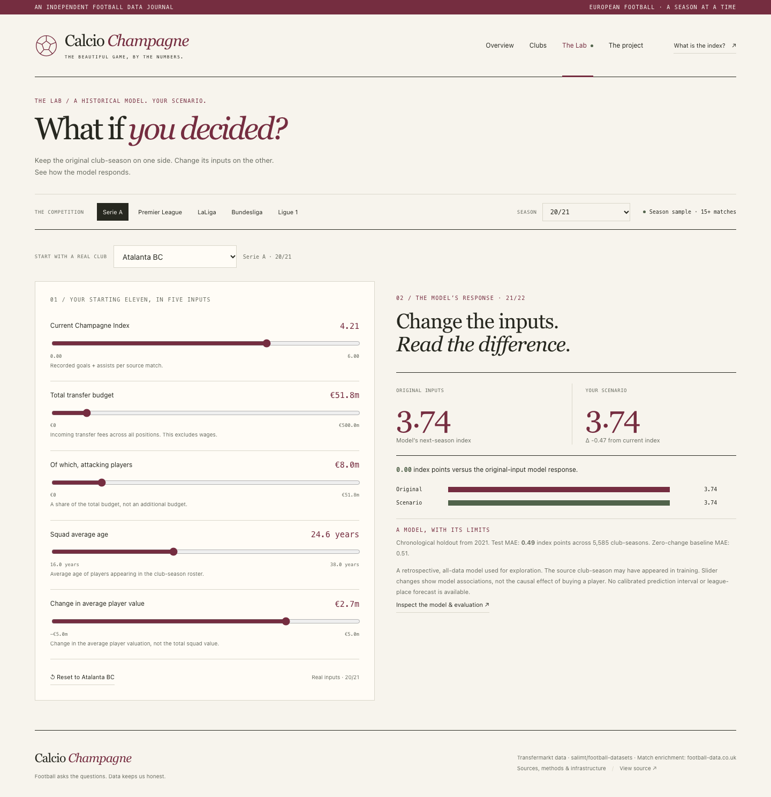

A reproducible football data system: source acquisition, relational processing, temporal evaluation, web interface, and measured runtime behaviour.
Calcio Champagne is a reproducible football data system that asks whether incoming transfer spending accompanies an improvement in next season’s recorded attacking output, and whether attacking output tracks same-season league finish. It combines pinned CSV acquisition, PostgreSQL, a Python processing pipeline, measured infrastructure and a browser application. The principal result is a very small spending/change association and a modest improvement over a zero-change prediction baseline. A separate comparison now reports actual league goals for, goals against, goal difference and score-based per-match attacking/defensive ranks; expected goals are not present in the loaded source. A cross-check finds player-source goalkeeper conceded totals equal the match scoreboard in 366/388 adequately covered top-five seasons; clean-sheet agreement is lower. Defensive spend has no useful linear association with next-season conceded-goal change in the available sample.
Champagne Index = (recorded player goals + assists) / source matches. The observation is club × season × competition. The main source is Transfermarkt player-level seasonal data; its group match count is a proxy, not a verified fixture count. The index is neither expected goals nor a match-event model.
The optional football-data.co.uk match enrichment supplies completed home/away scores for five leagues and five seasons (21/22–25/26): 25 league-season files and 8,908 completed matches in this snapshot. For each club, GF is goals scored, GA is goals conceded and GD = GF − GA. The attacking rank orders GF per played match descending; the defensive rank orders GA per match ascending. Both use SQL RANK within a league-season, so tied rates share a rank. The comparison keeps these whole-season totals separate from the selected clubs’ direct head-to-head results.
Serie A 24/25 makes the distinction concrete: Inter recorded 79 GF, 35 GA and +44 GD (attack rank 1, defense rank 2); Milan recorded 61, 43 and +18 (attack rank 3, defense rank 7). These ranks summarize scorelines, not tactics or chance quality. xG is not in the loaded match schema or checked source fields and is therefore not reported. Player-level `goals_conceded` and `clean_sheets` exist in the primary source, but coverage is uneven; they are not substituted for complete club match totals.
We also checked those goalkeeper totals against actual scores on 388 adequately covered top-five club-seasons: conceded totals agree exactly in 366 cases (94.3%), while clean-sheet counts agree in 269 (69.3%). This supports using the player aggregate as a qualified cross-check, not as the comparison source. Defensive transfer spending also has no useful linear association with next-season change in that conceded-goal rate (r = 0.004047, p = 0.426997, n = 38,531). This secondary relationship is descriptive and uses the broader, uneven-coverage player dataset.
The primary input consists of eleven pinned CSV tables (5,743,186 local rows in the audited snapshot). The loader verifies exact headers and hashes, normalizes the documented metadata exception, uses atomic downloads, bulk COPY and post-load indices. Team aliases are mapped before match scores join to canonical club identifiers. Raw datasets and model artifacts are excluded from the Git repository and Docker build context.
The optional match data is manually prepared and has a verified team-name map. Unplayed fixtures are excluded; dates, score ranges, result consistency and duplicate/conflicting fixtures are validated. Removing the optional source clears stale matches. The enrichment adds standings and head-to-head scores; the core Transfermarkt pipeline remains usable without it.
| Stage | Component | Responsibility |
|---|---|---|
| GET | Python loader | Verify/acquire CSVs and optional matches; normalize and validate. |
| STORE | PostgreSQL 16 | Persist source tables, canonical identifiers, indices and prepared outputs. |
| PROCESS | Python pipeline | Aggregate features, build targets, train/evaluate models, calculate standings. |
| SHOW | FastAPI + static browser app | Bounded read-only API, club views, comparisons, Lab and methods. |
Docker Compose gates downstream work on database health and successful completion of loading and processing. Measurements are a separate opt-in service. A legacy Streamlit dashboard is optional. Read-only API queries bind parameters and expose bounded prepared tables, not raw player records.
Incoming recorded transfer fees are compared with the next consecutive season’s change in Champagne Index. Only actual consecutive season pairs are included. On 38,531 eligible observations the Pearson correlation is −0.003612725 (p = 0.4782423): no useful linear spending association is supported. In 388 adequately covered top-five club-seasons, the same-season correlation between index and final position is −0.793285. The position sign is negative because lower numerical positions represent better finishes. It does not establish a spending or scoring intervention.
The prediction target is next consecutive season index minus current index. Five features are evaluated with earlier seasons for training and later seasons for a held-out test: 16,074 train rows and 5,585 test rows, with test seasons starting in 2021. RandomForest test R² is 0.127115 and MAE 0.485593; the zero-change baseline MAE is 0.511364 on the same test rows, about a 5% MAE reduction. This is a modest improvement, not an accuracy percentage. A separate all-data model powers the retrospective Lab and is not the temporal test model.
The first-team filter excludes reserve/youth clubs. Market values and fees contain structural missingness and undisclosed amounts. Seasonal rows are retrospective, not a pre-window causal forecast. A partial Transfermarkt season is not paired with full final standings: comparisons require at least 30 games and 80% match coverage.
The club comparison reports spending, player-level index components, actual league GF/GA/GD, attack/defense ranks, league finish, points and a distinct direct-meeting block with scorelines, wins/draws/losses, clean sheets and points. Missing optional match coverage is identified instead of shown as zero goals. CSV export and the Lab carry method notes and validation constraints.



Machine. Apple M3 Pro · 18 GiB RAM · 12 logical CPUs; Docker VM 12 CPUs / 7.70 GiB. Three-run means. Sources and built images retained; containers recreated, source rows reimported and the model retrained. OS/database caches were not flushed and other workloads were uncontrolled. Download and image build are excluded from the 31.10-second cached-source startup.
| Measurement | Observed value | Scope |
|---|---|---|
| Complete cached-source startup | 31.10 s | Mean of 3 runs |
| Loader / pipeline mean | 12.53 s / 9.70 s | Separate timed stages |
| Database / CSV footprint | 695.5 / 356.6 MiB | Measured snapshot |
| 300 selective lookups | 10.8724 s → 0.0748 s | One query, before/after index |
| Largest-table share | Rows | Load | Query |
|---|---|---|---|
| 25% | 469,679 | 1.40 s | 0.297 s |
| 50% | 939,359 | 2.94 s | 0.552 s |
| 100% | 1,878,719 | 6.18 s | 0.998 s |
Memory values are sampled docker stats working sets, not guaranteed peaks. Growth timings are local observations, not a universal scaling law. The 145.4× lookup change is specific to the measured selective query.
The repository snapshot has 38 unit/regression checks, 16 live API/data checks and 15 real-browser checks. The checks cover source verification, match consistency, target construction, model evaluation, endpoint contracts and core UI interaction. They do not prove that all failure modes are absent or establish independent work by each participant. Four study tracks in the companion guide map responsibilities to code paths; every participant should be able to explain the full pipeline and name only work they personally performed.
See README for the Docker Compose startup, loader options, optional match-data location and API. The report records the tested evidence and date; rebuilds can differ if upstream files or local metadata inputs change.
Prepared from https://github.com/Ataika/Calcio-Champagne-prediction-automated-system on branch codex/calcio-editorial-audit. Source attribution and implementation notes are maintained in docs/SOURCES.md and docs/AUDIT.md.